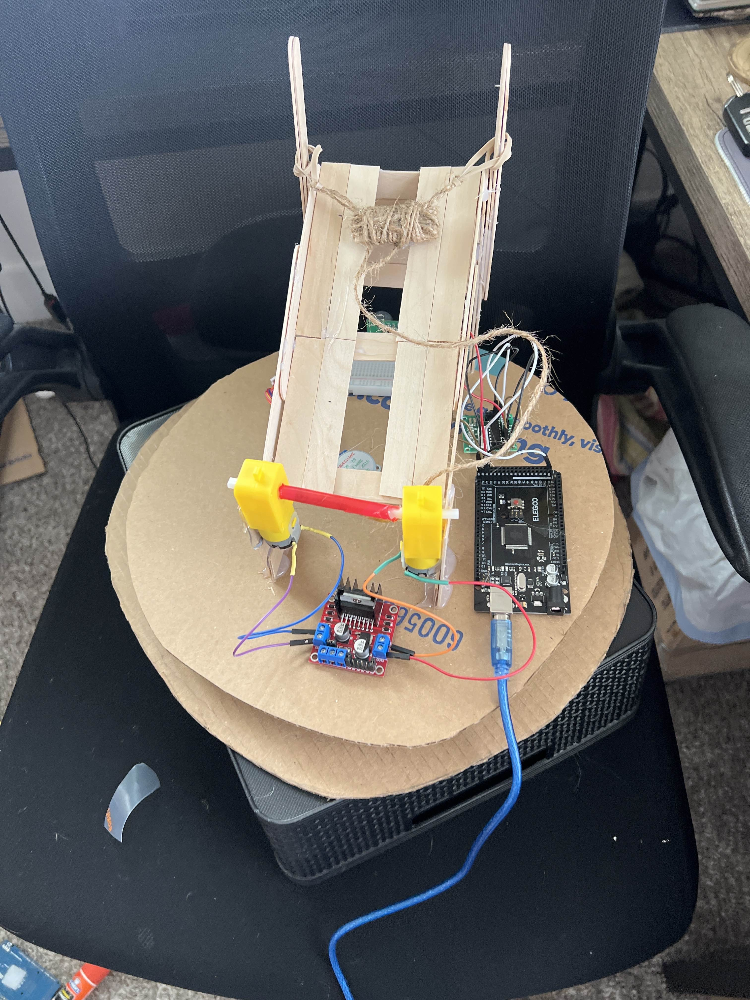
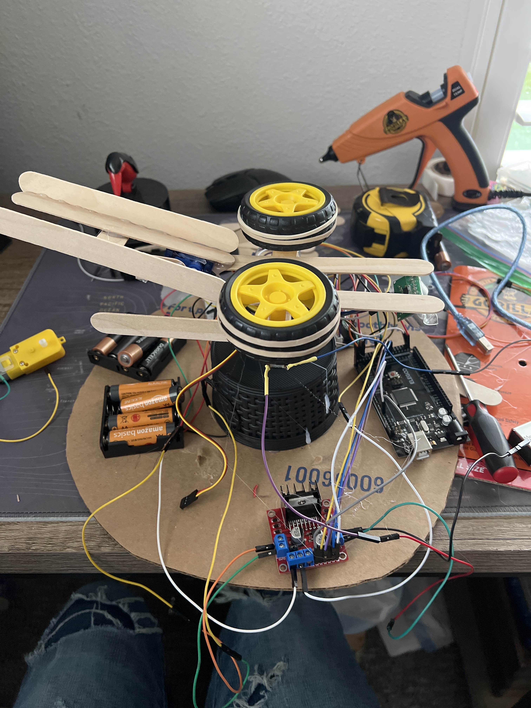
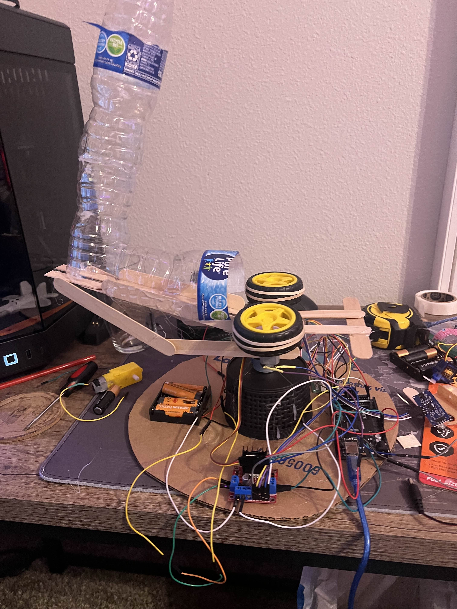
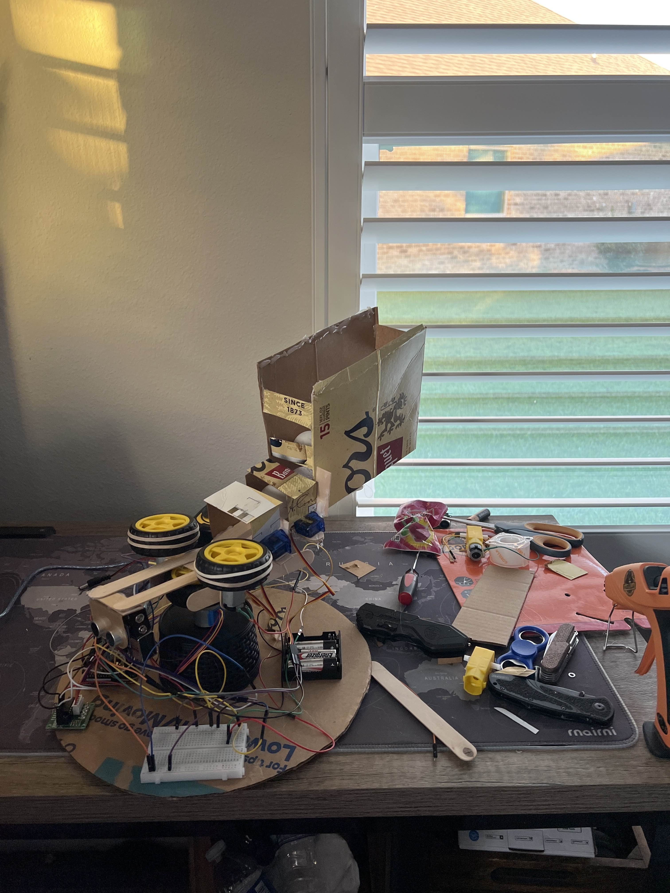

Project Overview
Objective: Design and build a fully automated ping pong ball turret system capable of scanning its surroundings, detecting targets, and launching projectiles autonomously. The system used stepper motors for rotation, servo actuation for loading, and a dual-wheel launcher mechanism for firing.
This project was completed individually for the Mechatronics course. I handled all aspects — from hardware design and fabrication to embedded C++ programming and troubleshooting. The final design emerged after multiple complete redesigns, each improving accuracy, speed, and firing consistency:contentReference[oaicite:1]{index=1}.

Design Evolution and Prototyping
The project began as a small, lightweight launcher intended to fire ping pong balls using elastic or spring energy. Early concepts included:
- Version 1: Rubber band catapult — failed due to insufficient tension control.
- Version 2: Bow-like rubber band launcher — too much torque required for servo actuation.
- Version 3: Spring launcher — functional, but unable to maintain consistent compression.
- Final Version: Dual high-speed wheels — achieved stable and repeatable launches without mechanical reset requirements:contentReference[oaicite:2]{index=2}.
The entire firing and loading system was fabricated using 3D-printed brackets, aluminum supports, and acrylic mounts. The sensor and servo assemblies were mounted on a gimbal plate that allowed a 180° scan range.

Control System and Programming
The control system was driven by an Arduino Uno microcontroller programmed in C++. The main loop integrated stepper motion, ultrasonic sensing, and servo control. The system continuously scanned its field of view (0–180°), detected objects within 250 cm, and triggered the launcher automatically.
Initial code versions suffered from a sensor scanning lockup issue — the stepper motor entered an infinite loop when processing multiple timed events. After testing several methods, including the Timer.h library, the final version used a step-triggered function call to update sensor readings at fixed intervals, preventing conflicts and allowing semi-concurrent scanning and firing:contentReference[oaicite:3]{index=3}.
- Hardware: Arduino Uno, SG90 servo, NEMA stepper motor, ultrasonic sensor, dual DC wheel motors
- Software: Arduino IDE (C++), manual timing control, serial debugging
- Key Feature: Target detection and automatic launch within 250 cm scan radius

Testing and Results
Each subsystem — motion, loading, and launching — worked reliably on its own. Integrating them required timing optimization and mechanical tuning. Final tests showed smooth scanning, precise servo operation, and consistent launch performance. Although simultaneous scanning and firing were limited by Arduino’s timing constraints, the project successfully met its autonomous targeting objective.
This build demonstrated practical integration of mechanical, electrical, and software systems and deepened my understanding of system-level debugging, timing control, and iterative design under real hardware constraints.
Gallery


Project Documentation
The complete report and source code include detailed circuit schematics, code logic, and test data:
📄 View Final code (PDF) 📄 View Final poster (PDF)